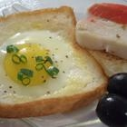
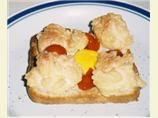

: DESCRIPTION :
Many a morning in collage
: Details :
Cooking Time::10min
Calories::189
Carbs::13
Fat::12
Protein::8
: Directions :
1.Butter both sides of bread. Cut a circular hole in the center
of the slice of bread,about 2 1/2 inches in diameter.
2.Heat a frying pan or griddle on
medium-high heat. When the frying pan is hot,place the bread into the pan and let it brown for one minute.Flip the toast
over and let the other side brown for one minute.
3.Break the egg into the hole in the bread. Cook for 2 minutes,or until the
egg is cooked to the consistency you prefer.
: Description :
This works for me!
: Details :
Cooking Time: 25 min
Calories: 140
carbs: 13
Fat: 6
Protein: 8
: Directions :
1 Pre-heat oven for 2 minutes (180C).
2 Beat the egg whites of the 2 eggs,
one at a time,till stiff.
3 Now take the 2 bread slices and
using a spoon, apply the egg whites in
the corners of each slice.
4 Put the entire egg yolk(without beating it) in the center of each slice.
5 Place on a wire rack.
6 Bake for 5 minutes till golden
brown on either side.
7 Remove from oven, place on a plate.
8 Sprinkle salt and pepper to taste.
9 Decorate with
Tomato Ketchup on each slice.
: Description :
You always have the ingredients for this
: Details :
Cooking Time: 10
Calories:192
carbs: 8
Fat: 15
Protein: 7
: Directions :
1 place ingredients in a bowl,
smash together with a fork.
2 Use more mayonnaise
as needed for egg size.
3 Serve on bread for a
sandwich, English muffins for
breakfast, or crackers for
an appetizer!
![ : DESCRIPTION :Many a morning in collage: Details :Cooking Time::10minCalories::189Carbs::13Fat::12Protein::8: Directions : 1.Butter both sides of bread. Cut a circular hole in the center of the slice of bread,about 2 1/2 inches in diameter. 2.Heat a frying pan or griddle on medium-high heat. When the frying pan is hot,place the bread into the pan and let it brown for one minute.Flip the toast over and let the other side brown for one minute. 3.Break the egg into the hole in the bread. Cook for 2 minutes,or until the egg is cooked to the consistency you prefer.](img/numbers-01.jpg){kind=link}
![ : Description : This works for me!: Details :Cooking Time: 25 min Calories: 140 carbs: 13 Fat: 6Protein: 8: Directions : 1 Pre-heat oven for 2 minutes (180C). 2 Beat the egg whites of the 2 eggs, one at a time,till stiff. 3 Now take the 2 bread slices and using a spoon, apply the egg whites in the corners of each slice. 4 Put the entire egg yolk(without beating it) in the center of each slice. 5 Place on a wire rack. 6 Bake for 5 minutes till golden brown on either side. 7 Remove from oven, place on a plate. 8 Sprinkle salt and pepper to taste. 9 Decorate with Tomato Ketchup on each slice.](img/numbers-02.jpg){kind=link}
{kind=link}